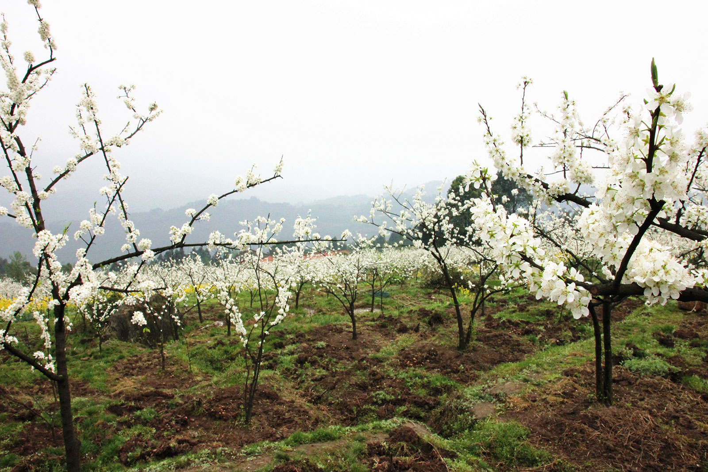
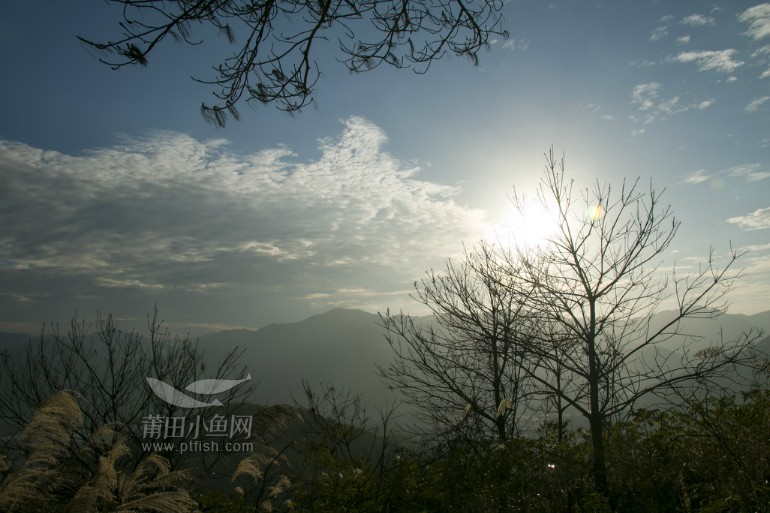
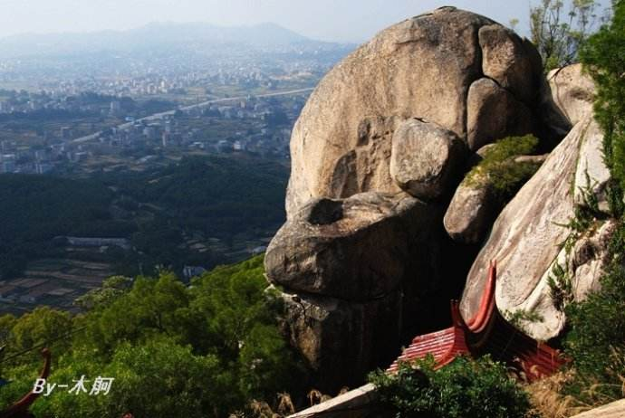

-

春游泗华陂
值新春佳节，几位同学相约到郊外的泗华陂踏青。此时在祖国北方，还是春寒料峭，冰天雪地，而在南国故乡，却是春光明媚，“吹面不寒杨柳风”。上世纪八十年代，我曾多次去泗华...
-

赖店千亩李花怒放胜雪景
连日来，仙游县赖店镇龙兴、罗峰、樟林、山尾等村漫山遍野的千亩李花竞相怒放，如同盖上了“皑皑白雪”，引得游客纷至沓来，争先在李花林中赏花、拍照游玩，赞叹不已。游县一直以来都有...
-
九龙山怀古
九重山位于秀屿区南日镇港南西户村，是南日岛的东南屏障。九是虚指，远看，多座山峰连绵不绝，重重叠叠。时值九月初九重阳节，石盘扫墓节，不由想起杜甫的《登高》，便决定效仿古人，再一次登高遥...
-

走读双桂岩
浑然一体的双桂岩三殿怀揣着需要诗与远方的生活情愫，即使欠仁少智，总爱乐山乐水，大自然的博大襟怀和非凡气度，绝不会因人的智愚贵贱而有亲疏之分。但去了静...
-

巨石成为山村一景
在石苍乡五湖村乌石自然村，成片良田间屹立着天然的岩石群，成为当地一道奇景，称之为“乌石岩”。据了解，乌石自然村正因此岩石得名，历经百年沧桑，见证了当地农耕文化的兴盛，如今更是成为一道旅游景点。...
-

除了榜头，游洋也有一处天马山景区
游洋天马景区俏山川 在仙游人眼中，仙游四大景区莫过于一菜溪，二麦斜，三九鲤，四天马。这里提到的“天马山”是属于榜头镇的。而在游洋镇和涵江区交界处的天马村也有一座天马山，虽然知名度没有榜头镇的闻名，但是...